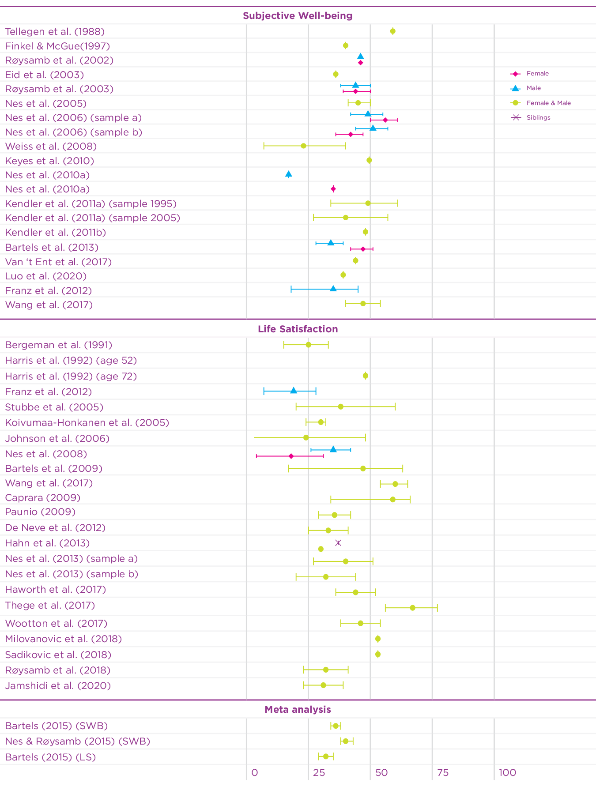
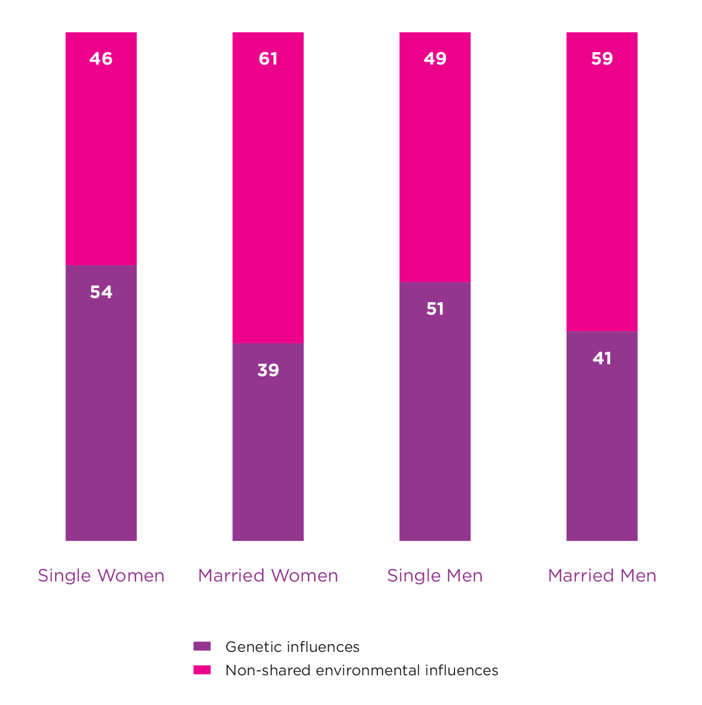
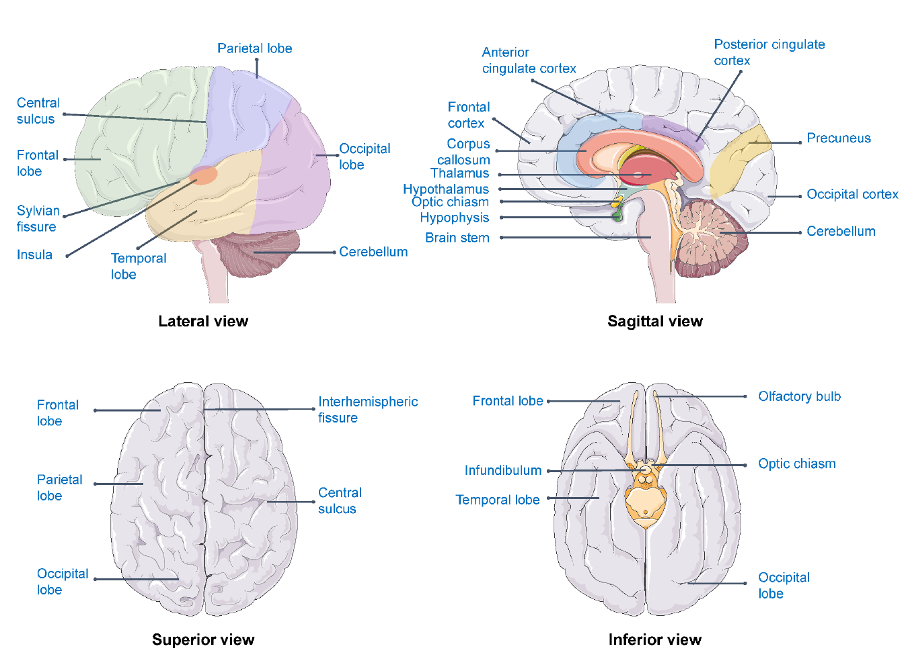

Exploring the Biological Basis for Happiness
Chapter Contents
- Causes of differences in Happiness between people
- Gene-Environment Interplay
- Molecular (epi) genetic findings for well-being
- Use of Molecular Genetic Results
- Happiness and the Brain
- Happiness and human physiology
- Some Considerations for future study of human physiology
- Implications for intervention and public health
- References
- Endnotes
Well-being, like other complex traits that provide rich diversity to our lives, has multiple causes. Rather than being daunted by the complexity of the genetic and environmental influences, we can draw hope from the dynamic nature of these influences. Findings so far show that some people find it easier than others to maintain good well-being, but these findings also tell us that positive and protective environmental experiences could be used to promote well-being in more people. The differences between us suggest that we may need multiple and diverse interventions that are personalised to individuals.
Causes of differences in Happiness between people
Why are some people happier than others, even if they live in the same country under more or less similar circumstances? This is an intriguing question. Knowledge on why some people feel better about their lives than others may provide us with clues about how best to help those most in need. Genetically informed research, such as twin and family studies, can provide valuable clues.
One of the first studies, and maybe also the most unique, based on data from twins is by Tellegen and colleagues.[1] This study made use of a unique sample of twins with data collected in the Minnesota Twin Study between 1970 and 1984 and the Minnesota Study of Twins Reared Apart between 1979 and 1986. By combining these two studies researchers had access to well-being data for four types of twin pairs. Information on well-being was available for identical (100% genetically identical) and fraternal twins (share 50% of genetic material on average) who grew up together, like most twin pairs and non-twin siblings. Tellegen and colleagues also had access to unique data for identical and fraternal twins who were separated shortly after they were born. The Minnesota team brought the twins back together and, among other things, assessed their well-being. Remarkably, identical twins who were reared apart (100% genetically identical, no shared environmental influences or experiences) turned out to be more similar with respect to their well-being than fraternal twins who grew up together (50% overlap on average and shared environment). The correlation for identical twins reared apart was .48, while the twin correlation for the fraternal twins who grew up together was .23. So, even though these identical twins had never met before the study, their happiness ratings were still more similar than the fraternal twins who grew up together in the same family and environment. This finding was the first, but very powerful, indication that genetic differences between people are a source of differences in happiness.

MZ twins who participated in the Minnesota Study of Twins Reared Apart. Jerry Levey (left) and Mark Newman met at age thirty-one years. Both twins were volunteer firefighters. Courtesy: Dr. Nancy L. Segal
Since this foundational work, dozens of twin-family studies have been conducted to understand how genetics and environment influence well-being. Information about the magnitude of genetic and environmental influences can be obtained from twin-family studies that contrast the resemblance of identical (monozygotic) twins and fraternal (dizygotic) twins, and their non-twin siblings or other family members. Because estimates from any individual study may be limited, it is useful to consolidate information across multiple investigations. In 2015 two comprehensive reviews of the causes of individual differences in happiness and well-being were published.[2] The weighted average heritability of well-being in the first review,[3] based on a sample size of 55,974 individuals, was estimated at 36% (95% CI: 34%-38%), while the weighted average heritability for satisfaction with life was 32% (95% CI: 29%-35%) (n = 47,750). Nes and Røysamb[4] reported the weighted average heritability across 13 independent studies including more than 30,000 twins (aged 12-88) from seven different countries to be 40% (95% CI: 37%-42%). These highly similar results, with overlapping confidence intervals, provide a robust estimate of the genetic influence on well-being. Both reviews and meta-analyses showed that both genetic and environmental influences are important for variation in well-being among individuals living in the same society.
Since 2015, the twin design has been used in an additional 15 studies to investigate the heritability of well-being using different measures of well-being.[5] Figure 5.1 summarises the heritability estimates of twin studies in the earlier meta-analyses, and of the recent twin studies on well-being. The heritability estimates of the recent studies on well-being vary somewhat (range: 0.27-0.67), but are mostly in line with the previous meta-analytic estimates. Since most of the studies are based on adult samples, a recent study using a Dutch twin sample[6] investigated the contribution of genetic and environmental factors on well-being across the lifespan. Genetic factors explained a substantial part of the phenotypic variance in well-being during childhood, adolescence, and adulthood (range 31-47%). In the younger samples, during childhood, shared environmental influences explained a large part of the variation, but these influences disappeared with age. This is of course partly explained by the fact that young twins really share more of their environment by living in the same household, while household sharing for adult twins is rare.
Figure 5.1: Overview of twin-based heritability estimates of well-being

Taken together, these studies based on European ancestry samples reveal that approximately 40% of the differences in happiness are accounted for by genetic differences between people while the remaining variance is accounted for by environmental influences that are unique to an individual. It is important to note that these estimates are based on models that assume that genetic and environmental influences are independent and added together explain the differences between people. In reality, though, genetic and environmental influences interact and correlate. Gene-environment interaction describes the phenomenon that the effects of the environment vary based on the genetic predisposition of an individual. For example, exposure to sunlight has a different effect for different people due to differences in skin pigmentation, which is based on an individual’s genetic background. Gene-environment correlation refers to the phenomenon that environmental effects are not randomly distributed. Our partly genetic features, moods and personalities elicit reactions in others. For example, some people have, due to the position of their eyes and the shape of their mouth, a more friendly-looking face than others. People in the environment unintentionally respond differently to people with more friendly faces. The shape of someone’s face is of course mainly driven by genetic background. Finally, individuals create and choose their own environment based on genetically informed preferences. Some people for example like quiet places while others feel better in busy cities. Below, we explore the interplay of genes and environment with respect to happiness and well-being in more detail.
30-40% of the differences in happiness between people is accounted for by genetic differences between people.
Gene-Environment Interplay
Although there is a clear impact of genetic influences on creating individual differences in well-being, it is important to understand what it means to find genetic influence on a complex trait, like well-being. First, if 30-40% of the variance in well-being within a population is due to genetic differences, this means that 60-70% of the variance can be attributed to differences in our environmental experiences and exposures. Another key finding is that the importance of genetic influences is not fixed from birth but can change throughout the lifespan and in response to current environmental conditions.[7] Unlike genetic influences for eye colour and blood type which are determined by DNA, genetic influences for complex traits like well-being do not operate in a deterministic fashion. Instead, they make a particular outcome more (or less) likely. Finding genetic influence on well-being means that for some people it is easier to maintain higher levels of well-being.
The key to explain individual differences in happiness and well-being will most likely be the complex interplay of an individual’s genetic predisposition and his or her environment. All humans have, more or less, the same set of genes at birth. The variants within our genes, though, differ. Some people will be born with a set of genetic variants that makes it easier to feel happy, while others are less fortunate. Genetic variants also play a role in an individual’s responsiveness to the environment. Likewise, people’s genetic profile partly drives their life choices and in that sense the environment in which they navigate. Moreover, an individual’s behaviour and happiness (driven by his or her genetic make-up), triggers environmental reactions.
Some people will be born with a set of genetic variants that makes it easier to feel happy, while others are less fortunate.
A simple way to consider whether the environment can change the impact of our genes is to estimate heritability in two groups of people where one is exposed to a certain environment, and the other is not. A classic example demonstrating a gene-environment interaction for well-being comes from a paper that estimates and compares heritability for well-being among married and unmarried twin pairs.[8] This study used a large sample of monozygotic (MZ) and dizygotic (DZ) male and female twin pairs (n = 4462) from a cohort in Norway. Around 48% of those included in the study were married, with married males and females shown to have greater well-being than those not married. The study revealed that genetic factors accounted for up to 51% and 54% of the variance in well-being among unmarried males and females respectively. This was reduced to 41% and 39% for those who were married, suggesting that the expression of genes associated with well-being are partly dependent on marital status (see Figure 5.2). The authors proposed that the greater reliance on genetic dispositions among unmarried individuals may be due to there being fewer behavioural cues in the environment. It was suggested that with its well-defined social arena, marriage is often coupled with unambiguous behavioural clues that may limit opportunities to express individual differences and thus dispositional genes.
Figure 5.2: Genetic and Environmental Influences on Well-being

These results taken from Nes et al., 2010 show how the magnitude of genetic influences on well-being can vary based on marital status. Heritability for both males and females were higher for those who were unmarried. These results indicate a gene-environment interaction.
The differences in heritability between those who were married and those who were not was present even though experiences of marriage vary widely from couple to couple, so what about an environmental change that happens to all? A recent twin study in the Netherlands considered whether the COVID-19 pandemic has changed the importance of genetic and environmental influences on well-being.[9] Participants completed surveys on optimism and meaning in life before the pandemic, and during the first few months of the pandemic in April and May 2020. Findings revealed that heritability estimates decreased slightly after the pandemic began, dropping from 26% and 32% for optimism and meaning in life pre-pandemic, to 20% and 25%, respectively. The genetic correlations between these two time points were 0.75 for optimism and 0.63 for meaning in life, suggesting a role for different genetic factors pre-pandemic and during the pandemic. Crucially these results show that the importance of genetic factors can change in response to changes in our environment, which indicates an interaction between genetic and environmental factors. One implication of finding interactions between genetic and environmental factors is the potential to draw out genetic strengths and dampen genetic risks using environmental interventions.
A fascinating insight from this study on optimism and meaning in life during a pandemic is that while most participants experienced decreases in their optimism and meaning in life, for more than a third of the participants their levels of optimism and meaning in life remained stable. It is possible that understanding the complexity of genetic and environmental influences can explain this finding too. Some research has shown that we are not all equally susceptible to our environmental experiences and exposures. Some individuals may be more sensitive and will respond negatively to poor environments and positively to good environments. Our sensitivity to environmental exposures has been shown to be partly due to genetic differences.[10] It is safe to say that estimates of the importance of genetic and environmental influences are just the starting point for much further research that explores the intricate ways in which genetic and environmental propensities play out across a lifespan and in response to changing experiences and exposures. And there is an added complexity, not only are there likely to be interactions between genetic and environmental influences, our environmental experiences and exposures are likely to be actively shaped by us and the people we surround ourselves with. In a study published in 2008, researchers found that levels of happiness among individuals tend to cluster, with people shown to be happier if they are connected to other happy people.[11] It is possible that this effect occurs due to what is known as a gene-environment correlation.
A gene-environment correlation (rGE) occurs when exposure to an event in the environment is not random, but determined in part, by genetic factors. Genes can influence our environments through a number of different ways, with many agreeing that there exist three types of rGE: passive, active, and evocative. A passive rGE occurs when genetically influenced traits of a parent alter the environment of their child. This is because parents create an environment that is consistent with their own genotype. For example, a child who has inherited relevant genes associated with well-being may also experience a warm and happy home. This environment would then serve to reinforce the genetically influenced well-being traits, resulting in a happier child. Children are also more likely to select their environments that are consistent with their genotype. This is what is known as an active rGE and could occur if a happy-prone child engaged in more positive play with their peers and experienced more happiness as a result of this. Here, the genotype of the child has led them towards a certain environment, which has further amplified their genetic disposition. If the peers then also responded positively to the child, the impact of the environment would be further strengthened and an evocative rGE would occur.
It is possible to test for the presence of gene-environment correlation, and one method to do this is using the twin design to estimate the heritability of environmental experiences. A systematic review of gene-environment correlation twin studies estimated that the average heritability of measures of the environment was as high as 27%.[12] More recent findings have revealed that genetically influenced traits that drive behaviour, such as grit and ambition, are positively correlated with positive life events, and negatively correlated with negative life events.[13] This means that inheriting positive well-being-related traits can increase our likelihood of not only maintaining higher well-being, but also the chances of experiencing positive life events. This resonates well with the finding of the catalysing effects of well-being revealing that happiness is associated with and precedes numerous successful outcomes, as well as behaviours paralleling success.[14]
Molecular (epi) genetic findings for well-being
Given the robust heritability estimate of 40% and the progress in the field of molecular genetics, it is important to go beyond an estimate based on twin-family designs to search for differences in the actual DNA patterns of humans (the human genome) to explain differences in well-being. The human genome is the complete assembly of DNA (deoxyribonucleic acid)-about 3 billion base pairs - that makes each individual unique. DNA holds the instructions for building the proteins that carry out a variety of functions in a cell. Better knowledge of the link between the human genome and well-being could improve understanding of the underlying biological processes to support improved prevention and intervention programs. This might even permit personalised well-being interventions.
The first reliable molecular evidence for the genetic complexity of well-being came from a method called GCTA (genome-wide complex trait analysis), where the proportion of phenotypic variance explained by all genome-wide SNPs (single nucleotide polymorphisms — DNA sequence variation of a single nucleotide) is estimated by comparing the phenotype (in this case well-being) and genetic similarity across a group of unrelated individuals. In a pooled sample of ~11,500 unrelated genotyped Swedish and Dutch participants, well-being was measured using the positive affect subscale of the Center for Epidemiology Studies Depression Scale (CES-D). In this group of genetically unrelated individuals, those with more similar overall DNA patterns scored more similarly for well-being. Based on this approach, it was estimated that 12-18% of the variance in well-being was accounted for by the additive effects of the SNPs measured on genotyping platforms.[15]
Next, the development of genome-wide association studies (GWASs) allowed for the first identification of specific genetic variants associated with well-being. In a GWAS, millions of genetic variants are measured and regressed on a phenotype in a large group of individuals. In this way, the association between each genetic variant and an outcome of interest is tested with a strong correction for multiple testing, so that the chance of finding false positives is greatly reduced. The first successful GWAS for well-being, with a sample of almost 300K participants, was performed in 2016.[16] This study led to the identification of 3 genetic variants (3 locations on the human genome) associated with well-being (defined as life satisfaction and positive affect). The SNPs had estimated effects in the range of 0.015-0.018 standard deviation per allele (each R^2^ ≈ 0.01%), so altogether have a tiny effect in explaining differences in well-being.
To increase the power of the gene finding effort, the latest GWAS for well-being combined well-being with depressive symptoms and neuroticism, to form the well-being spectrum.[17] In this study, 304 independent significant variant-phenotype associations were identified for the well-being spectrum, with 148 and 191 associations specific for life satisfaction and positive affect, respectively. Biological annotation of these variants revealed evidence for enrichment of genes differentially expressed in the subiculum (part of the hippocampus) and enrichment for GABAergic interneurons. However, even with this progress, the identified variants account for only a small percentage of the variation, meaning that we still have a long road ahead.
Another layer of genomic influences is captured in the epigenome. The epigenome is a multitude of chemical compounds that can tell the genome what to do. The epigenome is made up of chemical compounds and proteins that can attach to DNA and direct such actions as turning genes on or off, controlling the production of proteins in particular cells. The first and only epigenome-wide association study (EWAs) approach, to identify differentially methylated sites associated with individual differences in well-being, reported two genome-wide significant sites.[18] Gene ontology (GO) analyses, to see if the involved epigenome locations can explain biological processes, highlighted enrichment of several central nervous system categories among higher-ranking methylation sites. However, replication of these results is warranted in larger samples.
Twin studies in the available European ancestry samples have shown that about 40% of individual differences in well-being can be explained by genetic factors. These follow-up analyses taught us about the genetic complexity of well-being, with likely thousands of variants contributing to the trait. These studies also revealed that each genetic variant only contributes a tiny amount to the variation in well-being, so we cannot speak of a single “happiness gene” or a few “happiness genes” that assert substantial influence on well-being.
Use of Molecular Genetic Results
Based on the Genome-wide Association studies for well-being and other complex human traits, the overall genetic architecture of well-being is assumed to be polygenic involving the cumulative effects of numerous single-nucleotide polymorphisms (SNPs), each often with small effects. The first Genome-wide association study identified 3 genome-wide significant locations for well-being. The most recent Genome-wide Association Study (GWAS) revealed 304 independent genome-wide signals associated with the well-being spectrum. These significant variants together yet only explain a tiny bit of the total variance.
A promising next step is to use the outcome of the large-scale genome-wide association studies to create a so-called Polygenic Score.[19] A polygenic score (PGS), also called a polygenic risk score (PRS) or a Polygenic Index (PGI), is a number that summarises the estimated effect of many genetic variants on an individual’s phenotype, typically calculated as a weighted sum of trait-associated alleles. It reflects an individual’s estimated genetic predisposition for a given trait and can be used as a predictor for that trait.
The overall genetic architecture of well-being is found to be polygenic involving the cumulative effects of numerous genetic variants, each with small effects.
For example, in a sample of 4,571 individuals (50 to 65 years old) representing 14,937 individual-year observations from the Health and Retirement Study, it is reported that the PGS of well-being is positively associated with self-employment and earnings.[20] In addition, the PGS of well-being is negatively associated with loneliness in a large sample of 8,798 adult subjects (3,206 males and 5,592 females; ages 18-91, mean age = 45.3, median age = 43) in the Netherlands.[21] This indicates that people with a higher genetic predisposition for well-being are less lonely. As a final example, it has been found that higher PGS for well-being was related to a younger subjective age (the age people feel relative to their chronological age) in 7,763 individuals of the Health and Retirement Study.[22]
Another promising approach that leverages the outcomes of genome-wide association studies is Genetic instrumental variable analysis (aka Mendelian Randomization analysis). This is an instrumental variable approach with the use of genetic variants or polygenic scores as instrumental variables to obtain causal inferences on the effect of an exposure (risk factor) on an outcome from observational data. The method relies on the natural, random assortment of genetic variants resulting in a random distribution of genetic variants in a population.[23] In short, if the assumptions are met and a genetic variant is associated both with the exposure and the outcome, this would provide supportive evidence for a causal effect of the exposure on well-being.
Using this approach reveals, for example, bidirectional causal associations of insomnia with depressive symptoms and well-being.[24] The association between well-being and resilience is also found to be bidirectional.[25] While two studies indicate that higher Body Mass Index (BMI) leads to lower well-being, there is limited evidence that lower well-being leads to higher BMI.[26] Both approaches (PGS and Mendelian Randomization) hold a promise for the future. Both techniques, though, largely depend on the quality and power of the discovery Genome-Wide Association study.
To conclude, while there are still hurdles to be overcome and many unanswered questions, considerable progress has been made over the past years in identifying genetic and environmental factors that influence well-being. The findings of the behavioural and molecular genetics studies, and follow-up studies indicate a substantial role of biological factors underlying differences in well-being. To enhance the development of future (more precise) mental health support and intervention strategies, it is crucial to better understand the association between biological factors and well-being.
Happiness and the Brain
An obvious organ to study to attempt to explain differences in well-being among individuals is the brain. The human brain is the central organ of the human nervous system and is a key player in mood and emotion regulation. A distinction can be made between the brain structure (e.g. the size of the brain or brain areas) and brain functioning (e.g. the activation of brain areas in response to stimuli). Due to rapid technological developments, it became feasible to assess brain structure and brain functioning in living subjects. To assess brain structure the common approach is Magnetic Resonance Imaging (MRI). MRI maps the structure of the brain and can be used to compare sizes of certain brain areas across people. To assess brain functioning, functional Magnetic Resonance Imaging (fMRI), magnetoencephalography (MEG), and electroencephalography (EEG) are the three most common and most frequently used measures.
Figure 5.3: Brain areas related to well-being

For example, the association between well-being and subcortical brain volumes has been explored in a dataset of 724 twins and siblings.[27] The results of this study indicated associations of well-being with hippocampal volumes but not with volumes of the basal ganglia, thalamus, amygdala, or nucleus accumbens. The well-being-hippocampus relation turned out to be nonlinear and characterised by lower well-being in subjects with relatively smaller hippocampal volumes compared to subjects with medium and higher hippocampal volumes.
Beyond this example study, brain areas that are most consistently found in relation to well-being are the prefrontal cortex, precuneus, anterior cingulate cortex (ACC), thalamus, orbitofrontal cortex, insula and the posterior cingulate cortex (PCC) (see figure 5.3). Using the different techniques (e.g., fMRI, MRI and EEG), the relation between well-being and the prefrontal cortex, precuneus, insula and posterior cingulate cortex are replicated.
Importantly, however, the direction and strength of the associations differ to a great extent across studies. For example, in the fMRI studies that associated the prefrontal cortex to well-being, half of the relations were negative, whereas the other half were positive. The same inconsistency was found in the relation between the orbitofrontal cortex and precuneus. The most consistent finding in fMRI studies that investigated the connectivity between brain areas in relation to well-being is that a stronger functional connectivity within the default mode network (DMN) is related to lower well-being. The DMN is a large-scale brain network primarily composed of the medial prefrontal cortex, posterior cingulate cortex/precuneus, and angular gyrus. It is best known for being active when a person is not focused on the outside world and the brain is at wakeful rest, such as during daydreaming and mind-wandering.
In general, the inconsistent results might be explained by the large differences in brain imaging and the analysis techniques. Whereas fMRI assesses the brain activation, structural MRI is applied to investigate the volume of brain areas. Although it has been shown that the function of a brain area and its structure are related,[28] the findings might not be completely comparable. Furthermore, when using the same imaging technique, the analysis techniques still differed a lot. For example, the resting state fMRI studies either assessed fractional amplitude of low-frequency fluctuations (fALFF), or applied functional connectivity or regional homogeneity (ReHo) analyses to assess the regional neural activity or connectivity between brain areas. These differences in analytic techniques add further difficulties in comparing the results of the studies. In addition, an issue in the field of imaging is, due to the costs of such techniques, sample size and as a consequence, the power of the study, since high costs for this type of data collection limit the number of people who can be examined, which makes conclusions/insights less accurate.
Happiness and human physiology
Besides the brain, many processes in the human body could be of importance in explaining individual differences in happiness and well-being among individuals. For example, differences in neurotransmitter levels, hormone levels, and immune parameter activity, have all been linked to well-being.
With respect to neurotransmitters, dopamine and serotonin have often been linked to mood and well-being and have been studied in the link to depression with mixed results. Based on a limited number of available studies, higher positive affect is likely to be associated with higher levels of serotonin. In 2004, Flory and colleagues[29] first reported a positive association between serotonergic functioning and positive affect with no sex differences, indicating that in both men and women a higher average positive mood was associated with better serotonergic functioning, assessed as the response of the serotonin system to administered fenfluramine. Furthermore, the relation between positive affect and serotonin was significant when controlling for negative affect, suggesting independent effects for positive affect and serotonin. In direct blood measures of serotonin, both Duffy and colleagues[30] and Williams and colleagues[31] replicated this positive association between positive affect and serotonin levels in a sample of females and a sample of males, respectively.
The association of hormones, especially cortisol, with well-being has been investigated more often compared to the neurotransmitter research, as hormones are easier to assess in saliva or blood samples. In two studies with large samples (respectively n=2,873 and n=1,657) small negative associations between average or momentary level of cortisol and well-being have been observed. This indicates that people with lower levels of cortisol report higher levels of well-being, assessed as positive mood over the day and daily positive events respectively.[32] Furthermore, these studies did control for negative affect or depression, suggesting independent effects on well-being. In addition, the slope of the cortisol decrease over the day seems to be a consistent factor related to well-being, where higher well-being is associated with a faster decrease of cortisol levels over the day.
Another often-studied aspect of human physiology is the immune system. Given the immense impact of the COVID-19 pandemic, the importance of the immune system and its response has become crystal clear for human health. Inflammation is a reaction of the immune system, the activity of which can be split into innate immune responses, which are quick and generalised, and adaptive responses, which take longer but are more accurate and specific. The inflammatory response is a natural part of the immune response and is adaptive in the short-term, whereas chronic systemic inflammation has been linked to all-cause mortality.[33] Examples of inflammatory markers are C-reactive protein (CRP), interleukin-6 (IL-6), and fibrinogen (FIB). These are pro-inflammatory meaning that elevated levels are linked with negative health outcomes.[34]
Multiple studies report a negative association of CRP with different well-being measures (e.g. positive affect, life satisfaction, happiness) including the main measures used in the World Happiness Report.[35] Several studies report a negative association after controlling for depressive symptoms, indicating independent associations between CRP levels and well-being.[36] Similarly, several studies report that IL-6 was negatively related to different measures of well-being mainly with well-being assessed as positive affect, quality of life, and life satisfaction. The effects of IL-6 after controlling for depression are less clear with some studies still reporting an effect,[37] while in other studies the effects disappear.[38]
Some Considerations for future study of human physiology
Most of the studies mentioned with respect to human physiology investigated the biological factors within a single category, whereas combining multiple biological factors across the different categories, also known as multi-omics approaches, in relation to well-being might provide a more complete picture of the biology underlying well-being. Multi-omics is the combination and integration of multiple types of omics data, such as the genome, proteome, transcriptome, epigenome, and microbiome.[39] All the different processes have influences on each other and by combining these data, researchers can get a broader picture of the biological factors underlying complex traits like well-being. To understand the biology underlying well-being, an approach like multi-omics can also be applied to the combination of brain measures, hormones, neurotransmitters, and the immune system. In addition, the gut microbiome is a new research field. So far only four studies have related well-being to the microbiome diversity or composition.[40] All four studies reported significant results with well-being or positive mood relating to the abundance of different bacteria, indicating a relation between well-being and the microbiome. However, as one study only included 3 participants and there are conflicting results about the direction of the effect, much more research is needed to be confident about the effects on well-being.
Microbiome research is complicated by the possible effects of variation in dietary habits and geography on the composition of the gut microbiota. This might influence the results of microbiome studies and these concerns should be taken into account in future studies of well-being and the microbiome. The multi-omics approach might be helpful to clarify complex associations. For example, recent research reported an influence of the gut microbiome on mental health via the level of neurotransmitters.[41] The gut microbiome can alter the levels of different neurotransmitters and this alteration of neurotransmitters influences mental health. Similarly, an interaction among three categories, namely the gut microbiome, the stress response, including cortisol, and the immune system is suggested to play a role in depression, and anxiety.[42] Furthermore, it is important to consider the direction of effect. So far, most studies focus on an association but in the end to improve prevention and intervention strategies for well-being it is crucial to understand the direction of effect between human physiological factors and well-being. Causality analyses, such as longitudinal designs and the previously described Mendelian Randomization enable future researchers to investigate the direction of causality.
Implications for intervention and public health
So what are the implications of genetically informative research for happiness interventions? And how can we explain the seemingly paradoxical findings of substantial genetic effects and no shared environmental influences with large differences in average happiness across nations and overtime? A wealth of evidence, based on various research approaches, supports the notion of well-being as changing and changeable — at the individual, group, and national levels. Happiness intervention studies, including meta-analyses[43] have firmly documented that happiness may change in individuals and populations and have identified effective factors and moderators. The same holds for clinical psychology and therapy research, experimental and longitudinal studies, migration studies, and research on national differences and changes in such differences over time.
Importantly, twin and family studies deal with the causes of individual differences, and thus the variation or variance, and not with mean levels of happiness. Furthermore, they examine only within-country variability and do not account for average differences across nations. And finally, they are most often based on twin-family samples of European ancestry. The findings are therefore not necessarily a good approach to compare country differences at a global level. Yet, the majority of the variance in happiness tends to be within-country (>80%) rather than between countries. In a previous study of satisfaction with life[44] in 41 countries across the world, only 13% of the total variance was accounted for by between-nation differences. The effect of national differences was high compared to that of gender (1.5%) and maybe somewhat underestimated due to random measurement error. Nevertheless, the results indicate that the twin and family study findings are relevant also in a global context.
How do we take genetic/biological differences into account if we aim to increase the happiness level of the population? At the population level, welfare policies that target structural inequities and provide access to healthy living standards, meaningful and inclusive work, safety, sufficient economic resources, low corruption, and socially sustainable communities appear to play important roles. For example, a recent “environment-wide association study” linking well-being data from the Netherlands Twin Register to 139 neighbourhood-level environmental exposures,[45] identified 21 environmental factors significantly associated with well-being. These factors clustered in the domains of housing stock, income, core neighbourhood characteristics, livability (a composite measure of population composition, social cohesion, public space, safety, level of resources, and housing), and SES. Evidence also shows that people are happier when and where they have a sense of ownership and participation in the intervention or policy design process (i.e., experience autonomy, empowerment, social justice). For example, Knight and colleagues[46] (Knight et al., 2010) showed that residents involved in decisions regarding their surroundings (i.e., décor), reported increased identification with staff and fellow residents, displayed enhanced citizenship, reported improved well-being, and made more use of the communal space than residents not involved in such decision-making processes. The staff also found that “empowered” residents were more engaged with their environment and the people around them, to be generally happier and to have better health. Likewise, people get happier from their prosocial acts if they are actively involved in the design and delivery of these acts.[47]
Yet, while such factors and measures maintain or improve well-being for most, their effects often differ across people. Individual (e.g., personality, activity fit, effort), contextual (e.g., rural, urban, culture), and intervention-related factors (e.g., fidelity of completion), independently or in sum, cause some people or population groups to respond more positively or negatively than others. People differ - and due to their differences, they benefit from somewhat different interventions. To illustrate, let’s consider physical activity interventions, which may serve secondary aims of raising mood and quality of life. To increase daily activity levels, a highly heritable trait,[48] in the population a general approach might include a population-wide campaign urging all people to exercise at a moderate level for at least 30 minutes a day. These campaigns seem practical and attractive but are rarely universally effective: some like to exercise outdoors, others prefer indoors, some like to exercise in groups, others enjoy solitude — and some cannot afford training gear or have limited free time. Different people may also need different information in terms of content, form, and mode. When we acknowledge these individual differences and tailor interventions, effects are often more likely to arise across different groups.
So how can genetic research contribute to raising happiness in different segments of the population simultaneously? In theory the answer is simple: by deepening our understanding of the causal processes involved and taking us beyond a one-size-fits-all approach. The practical solutions are obviously more complex.
Most if not all human traits, including happiness are influenced by both genes and environments.[49] One major advantage of genetically informative designs is their ability to control for genetic and social endowments and to delineate causal mechanisms, for example processes of transmission in families, communities, or neighbourhoods. Such causal knowledge may help us to develop more effective biologically informed, evidenced-based interventions, to improve existing preventive programs, and to inform the next generation of measures - regardless of whether they are individual therapies or population-wide interventions (e.g., education, tax reforms, city-planning). Genetically informative designs are also critical in terms of fitting happiness measures to different individuals and subgroups. The notion of gene-environment matchmaking[50] invites us to use findings from genetically informative designs to create happiness-enhancing interventions, social policies, activities, and environments that enable flourishing of genetic potentials and simultaneously buffer vulnerability and risk. The processes involved are implicitly present in approaches like personalised medicine,[51] treatment-matching,[52] and precision medicine/prevention — many of which are incorporated also in extant happiness enhancing strategies (e.g., person-activity-fit). Collectively, these approaches build on individual variability in genes and environments to guide development, selection, and implementation of interventions to optimise results.
We should use findings from genetically informative designs to create happiness-enhancing interventions, social policies, activities, and environments that enable flourishing of genetic potentials and simultaneously buffer vulnerability and risk.
Efforts to navigate such tailored interventions from the individual level towards improving happiness and health in the general population are still in their early stages. From a population perspective, a notable challenge concerns the competing perspectives involved. Precision approaches commonly focus on individual vulnerabilities, whereas the population-wide approaches target public health, population well-being, and social inequalities. From a population perspective, the individual focus of precision approaches may not at first seem very useful. A number of major health-related successes have had little to do with precision prevention. One example is the tobacco warning campaigns and their associated measures (e.g., taxes, prohibition of smoking in public settings), which led to a striking reduction in the prevalence of cigarette smoking. Similarly, and of relevance to happiness; population-wide measures targeting satisfaction of universal, genetically founded human needs — for social relations, safety, and autonomy are likely to improve happiness for most. So, why would we invest in and prioritise additional tailored measures?
The genetically informed, matchmaking approaches may be particularly important in combination with universal (i.e., population-wide, primary) interventions. Such proportionate universalism aims to balance the universal and targeted (typically focusing on risk groups) perspectives in order to maximise effectiveness and benefits, and to narrow the gap in happiness inequality. Although genetically informed interventions may aggravate individual differences, econometric policy analyses combined with genetic tools have also been shown to reduce inequalities. A recent example from obesity research illustrates this important point.[53] Many nations have seen a rising obesity trend over the past decades. This trend is clearly not reflecting genetic changes over time, but rather results from radical modification of the diet and marketing of food products. Nevertheless, an additional year of secondary education seems to benefit those with higher genetic risk of obesity more than those with lower risk, substantially reducing the gap in unhealthy body size between the top and bottom terciles (from 20 to 6 percentage points). This effect is likely to reflect changes in material resources and/or changes in health behaviour and underscores that social policy may play an important role in mitigating health differences rising from genetic variation. Hence, genetically informed approaches clearly have the potential to improve prevention strategies and reduce differences between people, and may over time improve population health - provided that environmental and socioeconomic factors are incorporated. Importantly though, the existing research base is narrow. For example, strategies like the one above resting on polygenic risk score approaches are better calibrated for individuals of European ancestry than for others. Greater diversity of participants included and analysed in such studies - and related genetically informed designs - would improve utility for all groups, and particularly for those most underrepresented.
In conclusion, genetic studies are likely to be a gamechanger for the study of happiness and well-being and to have ground-breaking impact on intervention models and strategies. Currently, genetically informed population strategies targeting population well-being and inequalities in happiness are in their early stages. More needs to be known about how to break down adverse gene-environment interplay and frame favourable interplay—in individuals and different segments of different populations. More knowledge is also needed about how various aspects of the home and community environments affect the expression of genetic propensity to happiness. Further studies into this arena will illuminate how social gradients in happiness and health may be formed by social selection or causation, and directly inform us on how to create beneficial neighbourhoods that prevent manifestations of genetic risk and promote opportunities for different individuals and population groups.
References
Abdellaoui, A., Nivard, M. G., Hottenga, J.-J., Fedko, I., Verweij, K. J., Baselmans, B. M., Ehli, E. A., Davies, G. E., Bartels, M., & Boomsma, D. I. (2018). Predicting loneliness with polygenic scores of social, psychological and psychiatric traits. Genes, Brain and Behavior, 17(6), e12472.
Aknin, L. B., Whillans, A. V., Norton, M. I., & Dunn, E. W. (n.d.). Happiness and Prosocial Behavior: An Evaluation of the Evidence. 20.
Assary, E., Zavos, H. M. S., Krapohl, E., Keers, R., & Pluess, M. (2021). Genetic architecture of Environmental Sensitivity reflects multiple heritable components: A twin study with adolescents. Molecular Psychiatry, 26(9), 4896-4904. [https://doi.org/10.1038/s41380-020-0783-8]
Barcellos, S. H., Carvalho, L. S., & Turley, P. (2018). Education can reduce health differences related to genetic risk of obesity. Proceedings of the National Academy of Sciences, 115(42), E9765-E9772. [https://doi.org/10.1073/pnas.1802909115]
Bartels, M. (2015). Genetics of wellbeing and its components satisfaction with life, happiness, and quality of life: A review and meta-analysis of heritability studies. Behavior Genetics, 45(2), 137-156.
Bartels, M., Benjamin, D. J., Cesarini, D., De Neve, J.-E., Johannesson, M., Koellinger, P. D., Krueger, R. F., Magnusson, P. K. E., Pedersen, N. L., Rietveld, C. A., & Tiemeier, H. (2013). Molecular genetics and subjective well-being (Monograph No. CEPDP1225). Centre for Economic Performance, London School of Economics and Political Science. [http://cep.lse.ac.uk/_new/publications/series.asp?prog=CEP]
Baselmans, B. M. L., Jansen, R., Ip, H. F., van Dongen, J., Abdellaoui, A., van de Weijer, M. P., Bao, Y., Smart, M., Kumari, M., Willemsen, G., Hottenga, J.-J., Boomsma, D. I., de Geus, E. J. C., Nivard, M. G., & Bartels, M. (2019). Multivariate genome-wide analyses of the well-being spectrum. Nature Genetics, 51(3), 445-451. [https://doi.org/10.1038/s41588-018-0320-8]
Baselmans, B. M., Willems, Y. E., van Beijsterveldt, C. E. M., Ligthart, L., Willemsen, G., Dolan, C. V., Boomsma, D. I., & Bartels, M. (2018). Unraveling the genetic and environmental relationship between well-being and depressive symptoms throughout the lifespan. Frontiers in Psychiatry, 9, 261.
Bolier, L., Haverman, M., Westerhof, G. J., Riper, H., Smit, F., & Bohlmeijer, E. (2013). Positive psychology interventions: A meta-analysis of randomized controlled studies. BMC Public Health, 13(1), 1-20.
Broek, N. van den, Treur, J. L., Larsen, J. K., Verhagen, M., Verweij, K. J. H., & Vink, J. M. (2018). Causal associations between body mass index and mental health: A Mendelian randomisation study. J Epidemiol Community Health, 72(8), 708-710. [https://doi.org/10.1136/jech-2017-210000]
Carpenter, L. L., Gawuga, C. E., Tyrka, A. R., & Price, L. H. (2012). C-reactive protein, early life stress, and wellbeing in healthy adults. Acta Psychiatrica Scandinavica, 126(6), 402-410. [https://doi.org/10.1111/j.1600-0447.2012.01892.x]
Davalos, D., & Akassoglou, K. (2012). Fibrinogen as a key regulator of inflammation in disease. Seminars in Immunopathology, 34(1), 43-62.
de Vries, L. P., Baselmans, B. M. L., Luykx, J. J., de Zeeuw, E. L., Minică, C. C., de Geus, E. J. C., Vinkers, C. H., & Bartels, M. (2021). Genetic evidence for a large overlap and potential bidirectional causal effects between resilience and well-being. Neurobiology of Stress, 14, 100315. [https://doi.org/10.1016/j.ynstr.2021.100315]
de Vries, L. P., van de Weijer, M. P., Pelt, D. H., Ligthart, L., Willemsen, G., Boomsma, D. I., de Geus, E. J., & Bartels, M. (2021). Gene-by-Crisis Interaction for Optimism and Meaning in Life: The Effects of the COVID-19 Pandemic. Behavior Genetics, 1-13.
Duffy, M. E., Stewart-Knox, B. J., McConville, C., Bradbury, I., O’Connor, J., Helander, A., & Strain, J. J. (2006). The relationship between whole-blood serotonin and subjective mood in apparently healthy postmenopausal women. Biological Psychology, 73(2), 165-168. [https://doi.org/10.1016/j.biopsycho.2006.01.014]
Flory, J. D., Manuck, S. B., Matthews, K. A., & Muldoon, M. F. (2004). Serotonergic function in the central nervous system is associated with daily ratings of positive mood. Psychiatry Research, 129(1), 11-19. [https://doi.org/10.1016/j.psychres.2004.06.010]
Fowler, J. H., & Christakis, N. A. (2008). Dynamic spread of happiness in a large social network: Longitudinal analysis over 20 years in the Framingham Heart Study. BMJ, 337, a2338. [https://doi.org/10.1136/bmj.a2338]
Friedman, E. M., & Ryff, C. D. (2012). Living Well With Medical Comorbidities: A Biopsychosocial Perspective. The Journals of Gerontology: Series B, 67(5), 535-544. [https://doi.org/10.1093/geronb/gbr152]
Gastfriend, D. R., & McLellan, A. T. (1997). TREATMENT MATCHING: Theoretic Basis and Practical Implications. Medical Clinics of North America, 81(4), 945-966. [https://doi.org/10.1016/S0025-7125(05)70557-5]
Gordon, E. (2007). Integrating genomics and neuromarkers for the era of brain-related personalized medicine. Personalized Medicine, 4(2), 201-215. [https://doi.org/10.2217/17410541.4.2.201]
Hasin, Y., Seldin, M., & Lusis, A. (2017). Multi-omics approaches to disease. Genome Biology, 18(1), 83. [https://doi.org/10.1186/s13059-017-1215-1]
Haworth, C., & Davis, O. (2014). From observational to dynamic genetics. Frontiers in Genetics, 5. [https://www.frontiersin.org/article/10.3389/fgene.2014.00006]
Ironson, G., Banerjee, N., Fitch, C., & Krause, N. (2018). Positive emotional well-being, health Behaviors, and inflammation measured by C-Reactive protein. Social Science & Medicine, 197, 235-243. [https://doi.org/10.1016/j.socscimed.2017.06.020]
Kendler, K. S., & Baker, J. H. (2007). Genetic influences on measures of the environment: A systematic review. Psychological Medicine, 37(5), 615-626.
Knight, C., Haslam, S. A., & Haslam, C. (2010). In home or at home? How collective decision making in a new care facility enhances social interaction and wellbeing amongst older adults. Ageing & Society, 30(8), 1393-1418.
Lee, S.-H., Yoon, S.-H., Jung, Y., Kim, N., Min, U., Chun, J., & Choi, I. (2020). Emotional well-being and gut microbiome profiles by enterotype. Scientific Reports, 10(1), 20736. [https://doi.org/10.1038/s41598-020-77673-z]
Li, L., Su, Q., Xie, B., Duan, L., Zhao, W., Hu, D., Wu, R., & Liu, H. (2016). Gut microbes in correlation with mood: Case study in a closed experimental human life support system. Neurogastroenterology & Motility, 28(8), 1233-1240. [https://doi.org/10.1111/nmo.12822]
Liu, T., Feenstra, K. A., Heringa, J., & Huang, Z. (2020). Influence of Gut Microbiota on Mental Health via Neurotransmitters: A Review. Journal of Artificial Intelligence for Medical Sciences, 1(1-2), 1-14. [https://doi.org/10.2991/jaims.d.200420.001]
Lyubomirsky, S., King, L., & Diener, E. (2005). The benefits of frequent positive affect: Does happiness lead to success? Psychological Bulletin, 131(6), 803.
Maluf, C. B., Barreto, S. M., Giatti, L., Ribeiro, A. L., Vidigal, P. G., Azevedo, D. R. M., Griep, R. H., Matos, S. M. A., Ji, C., Cappuccio, F. P., & Miller, M. A. (2020). Association between C reactive protein and all-cause mortality in the ELSA-Brasil cohort. Journal of Epidemiology and Community Health, 74(5), 421-427. [https://doi.org/10.1136/jech-2019-213289]
Michels, N., Van de Wiele, T., Fouhy, F., O’Mahony, S., Clarke, G., & Keane, J. (2019). Gut microbiome patterns depending on children’s psychosocial stress: Reports versus biomarkers. Brain, Behavior, and Immunity, 80, 751-762. [https://doi.org/10.1016/j.bbi.2019.05.024]
Nes, R. B., & Røysamb, E. (2015). The heritability of subjective well-being: Review and meta-analysis. The Genetics of Psychological Wellbeing: The Role of Heritability and Genetics in Positive Psychology, 75-96.
Nes, R. B., Røysamb, E., Harris, J. R., Czajkowski, N., & Tambs, K. (2010). Mates and Marriage Matter: Genetic and Environmental Influences on Subjective Wellbeing Across Marital Status. Twin Research and Human Genetics, 13(4), 312-321. [https://doi.org/10.1375/twin.13.4.312]
Okbay, A., Baselmans, B. M. L., De Neve, J.-E., Turley, P., Nivard, M. G., Fontana, M. A., Meddens, S. F. W., Linnér, R. K., Rietveld, C. A., Derringer, J., Gratten, J., Lee, J. J., Liu, J. Z., de Vlaming, R., Ahluwalia, T. S., Buchwald, J., Cavadino, A., Frazier-Wood, A. C., Furlotte, N. A., … Cesarini, D. (2016). Genetic variants associated with subjective well-being, depressive symptoms, and neuroticism identified through genome-wide analyses. Nature Genetics, 48(6), 624-633. [https://doi.org/10.1038/ng.3552]
Ong, A. D., Benson, L., Zautra, A. J., & Ram, N. (2018). Emodiversity and biomarkers of inflammation. Emotion, 18(1), 3-14. [https://doi.org/10.1037/emo0000343]
Patel, P. C., Rietveld, C. A., Wolfe, M. T., & Wiklund, J. (2021). The polygenic risk score of subjective well-being, self-employment, and earnings among older individuals. Entrepreneurship Theory and Practice, 45(2), 440-466.
Peirce, J. M., & Alviña, K. (2019). The role of inflammation and the gut microbiome in depression and anxiety. Journal of Neuroscience Research, 97(10), 1223-1241.
Polderman, T. J. C., Benyamin, B., de Leeuw, C. A., Sullivan, P. F., van Bochoven, A., Visscher, P. M., & Posthuma, D. (2015). Meta-analysis of the heritability of human traits based on fifty years of twin studies. Nature Genetics, 47(7), 702-709. [https://doi.org/10.1038/ng.3285]
Polygenic Risk Scores. (n.d.). Genome.Gov. Retrieved 15 February 2022, from [https://www.genome.gov/Health/Genomics-and-Medicine/Polygenic-risk-scores]
Proctor, M. J., Morrison, D. S., Talwar, D., Balmer, S. M., Fletcher, C. D., O’Reilly, D. St. J., Foulis, A. K., Horgan, P. G., & McMillan, D. C. (2011). A comparison of inflammation-based prognostic scores in patients with cancer. A Glasgow Inflammation Outcome Study. European Journal of Cancer, 47(17), 2633-2641. [https://doi.org/10.1016/j.ejca.2011.03.028]
Røysamb, E., & Nes, R. (2018). The Genetics of Well-being.
Sin, N. L., & Lyubomirsky, S. (2009). Enhancing well-being and alleviating depressive symptoms with positive psychology interventions: A practice-friendly meta-analysis. Journal of Clinical Psychology, 65(5), 467-487. [https://doi.org/10.1002/jclp.20593]
Sin, N. L., Ong, A. D., Stawski, R. S., & Almeida, D. M. (2017). Daily positive events and diurnal cortisol rhythms: Examination of between-person differences and within-person variation. Psychoneuroendocrinology, 83, 91-100. [https://doi.org/10.1016/j.psyneuen.2017.06.001]
Smith, G. D., & Ebrahim, S. (2003). ‘Mendelian randomization’: Can genetic epidemiology contribute to understanding environmental determinants of disease? International Journal of Epidemiology, 32(1), 1-22. [https://doi.org/10.1093/ije/dyg070]
Stephan, Y., Sutin, A. R., Kornadt, A., & Terracciano, A. (2019). Polygenic scores for education, health, and personality as predictors of subjective age among older individuals of European ancestry: Evidence from the Health and Retirement Study. Psychology and Aging, 34(1), 139.
Steptoe, A., O’Donnell, K., Badrick, E., Kumari, M., & Marmot, M. (2008). Neuroendocrine and Inflammatory Factors Associated with Positive Affect in Healthy Men and Women: The Whitehall II Study. American Journal of Epidemiology, 167(1), 96-102. [https://doi.org/10.1093/aje/kwm252]
Sui, J., Huster, R., Yu, Q., Segall, J. M., & Calhoun, V. D. (2014). Function-structure associations of the brain: Evidence from multimodal connectivity and covariance studies. NeuroImage, 102, 11-23. [https://doi.org/10.1016/j.neuroimage.2013.09.044]
Tellegen, A., Lykken, D. T., Bouchard, T. J., Wilcox, K. J., Segal, N. L., & Rich, S. (1988). Personality similarity in twins reared apart and together. Journal of Personality and Social Psychology, 54(6), 1031.
Toosy, A. T., Ciccarelli, O., Parker, G. J. M., Wheeler-Kingshott, C. A. M., Miller, D. H., & Thompson, A. J. (2004). Characterizing function-structure relationships in the human visual system with functional MRI and diffusion tensor imaging. NeuroImage, 21(4), 1452-1463. [https://doi.org/10.1016/j.neuroimage.2003.11.022]
Valles-Colomer, M., Falony, G., Darzi, Y., Tigchelaar, E. F., Wang, J., Tito, R. Y., Schiweck, C., Kurilshikov, A., Joossens, M., Wijmenga, C., Claes, S., Van Oudenhove, L., Zhernakova, A., Vieira-Silva, S., & Raes, J. (2019). The neuroactive potential of the human gut microbiota in quality of life and depression. Nature Microbiology, 4(4), 623-632. [https://doi.org/10.1038/s41564-018-0337-x]
van Agteren, J., Iasiello, M., Lo, L., Bartholomaeus, J., Kopsaftis, Z., Carey, M., & Kyrios, M. (2021). A systematic review and meta-analysis of psychological interventions to improve mental wellbeing. Nature Human Behaviour, 5(5), 631-652. [https://doi.org/10.1038/s41562-021-01093-w]
van de Weijer, M. P., Baselmans, B. M. L., Hottenga, J.-J., Dolan, C. V., Willemsen, G., & Bartels, M. (2021). Expanding the environmental scope: An environment-wide association study for mental well-being. Journal of Exposure Science & Environmental Epidemiology. [https://doi.org/10.1038/s41370-021-00346-0]
van de Weijer, M. P., de Vries, L., & Bartels, M. (2020). Happiness and Wellbeing; the value and findings from genetic studies.
van der Zee, M. D. (2021). Molecular and behavioral genetic investigation of voluntary exercise behaviors. Proefschriftenprinten.
Van der Zee, M. D., Helmer, Q., Boomsma, D. I., Dolan, C. V., & De Geus, E. J. C. (2020). An extended twin-pedigree study of different classes of voluntary exercise behavior. Behavior genetics, 50(2), 94-104.
Van 't Ent, D., den Braber, A., Baselmans, B. M. L., Brouwer, R. M., Dolan, C. V., Hulshoff Pol, H. E., de Geus, E. J. C., & Bartels, M. (2017). Associations between subjective well-being and subcortical brain volumes. Scientific Reports, 7(1), 6957. [https://doi.org/10.1038/s41598-017-07120-z]
Vittersø, J., Røysamb, E., & Diener, E. (2002). The Concept of Life Satisfaction Across Cultures: Exploring Its Diverse Meaning and Relation to Economic Wealth. In E. Gullone & R. A. Cummins (Eds.), The Universality of Subjective Wellbeing Indicators: A Multi-disciplinary and Multi-national Perspective (pp. 81-103). Springer Netherlands. https://doi.org/10.1007/978-94-010-0271-4_6
Williams, E., Stewart-Knox, B., Helander, A., McConville, C., Bradbury, I., & Rowland, I. (2006). Associations between whole-blood serotonin and subjective mood in healthy male volunteers. Biological Psychology, 71(2), 171-174.
Wootton, R. E., Davis, O. S., Mottershaw, A. L., Wang, R. A. H., & Haworth, C. (2017). Genetic and environmental correlations between subjective wellbeing and experience of life events in adolescence. European Child & Adolescent Psychiatry, 26(9), 1119-1127.
Wootton, R. E., Lawn, R. B., Millard, L. A. C., Davies, N. M., Taylor, A. E., Munafò, M. R., Timpson, N. J., Davis, O. S. P., Smith, G. D., & Haworth, C. M. A. (2018). Evaluation of the causal effects between subjective wellbeing and cardiometabolic health: Mendelian randomisation study. BMJ, 362, k3788. [https://doi.org/10.1136/bmj.k3788]
Zhou, F., Guo, Y., Wang, Z., Liu, S., & Xu, H. (2021). Assessing the causal associations of insomnia with depressive symptoms and subjective well-being: A bidirectional Mendelian randomization study. Sleep Medicine, 87, 85-91. [https://doi.org/10.1016/j.sleep.2021.08.025]
Endnotes
(Tellegen et al., 1988) ↩︎
(Bartels, 2015), (Nes & Røysamb, 2015) ↩︎
(Bartels, 2015) ↩︎
(Nes et al., 2010) ↩︎
(Van de Weijer et al., 2020) ↩︎
(B. M. L. Baselmans et al., 2019) ↩︎
(Haworth & Davis, 2014) ↩︎
(Nes et al., 2010) ↩︎
(de Vries, van de Weijer, et al., 2021) ↩︎
(Assary et al., 2021) ↩︎
(Fowler & Christakis, 2008) ↩︎
(Kendler & Baker, 2007) ↩︎
(Wootton et al., 2017). ↩︎
(Lyubomirsky et al., 2005) ↩︎
(Bartels et al., 2013) ↩︎
(Okbay et al., 2016). [https://doi.org/10.1038/ng.3552] ↩︎
(B. M. L. Baselmans et al., 2019) ↩︎
cg10845147, p = 1.51 ∗ 10-8 and cg01940273, p = 2.34 ∗ 10-8) that reached genome-wide significance following Bonferroni correction. Four more sites (cg03329539, p = 2.76∗ 10-7; cg09716613, p = 3.23 ∗ 10-7; cg04387347, p = 3.95 ∗ 10-7; and cg02290168, p = 5.23 ∗ 10-7) significant when applying the widely used criterion of an FDR q value < 0.05 for statistical significance. ↩︎
(Polygenic Risk Scores, n.d.) ↩︎
(Patel et al., 2021) ↩︎
(Abdellaoui et al., 2018) ↩︎
(Stephan et al., 2019) ↩︎
(Smith & Ebrahim, 2003) ↩︎
(Zhou et al., 2021) ↩︎
(de Vries, Baselmans, et al., 2021) ↩︎
(Broek et al., 2018), (Wootton et al., 2018) ↩︎
(Van 't Ent et al., 2017) ↩︎
(Sui et al., 2014), (Toosy et al., 2004) ↩︎
(Flory et al., 2004) ↩︎
(Duffy et al., 2006) ↩︎
(Williams et al., 2006) ↩︎
(Steptoe et al., 2008), (Sin et al., 2017) ↩︎
(Proctor et al., 2011) ↩︎
(Davalos & Akassoglou, 2012), (Maluf et al., 2020) ↩︎
(Carpenter et al., 2012), (Steptoe et al., 2008) ↩︎
(Ironson et al., 2018) ↩︎
(Friedman & Ryff, 2012) ↩︎
(Ong et al., 2018) ↩︎
(Hasin et al., 2017) ↩︎
(Li et al., 2016), (Valles-Colomer et al., 2019), (Michels et al., 2019), (Lee et al., 2020) ↩︎
(Liu et al., 2020) ↩︎
(Peirce & Alviña, 2019) ↩︎
(Sin & Lyubomirsky, 2009), (Bolier et al., 2013), (van Agteren et al., 2021) ↩︎
(Vittersø et al., 2002) ↩︎
(van de Weijer et al., 2021) ↩︎
(Knight et al., 2010) ↩︎
For more details and examples see chapter 4 of the World Happiness Report 2019. (Aknin et al., n.d.) ↩︎
(van der Zee et al., 2020), (van der Zee, Matthijs Daniël et al., 2021) ↩︎
(Polderman et al., 2015) ↩︎
(Røysamb & Nes, 2018) ↩︎
(Gordon, 2007) ↩︎
(Gastfriend & McLellan, 1997) ↩︎
(Barcellos et al., 2018) ↩︎